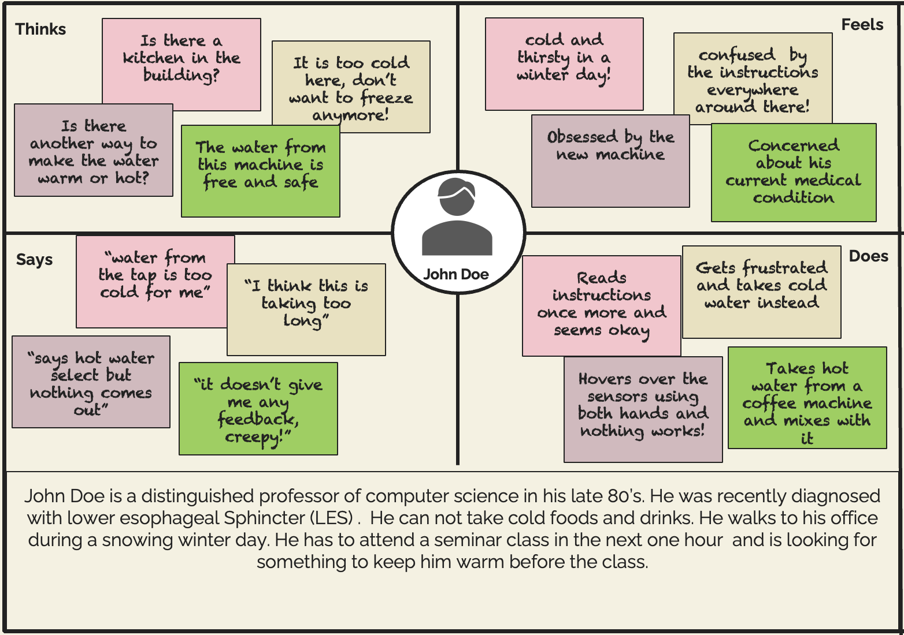
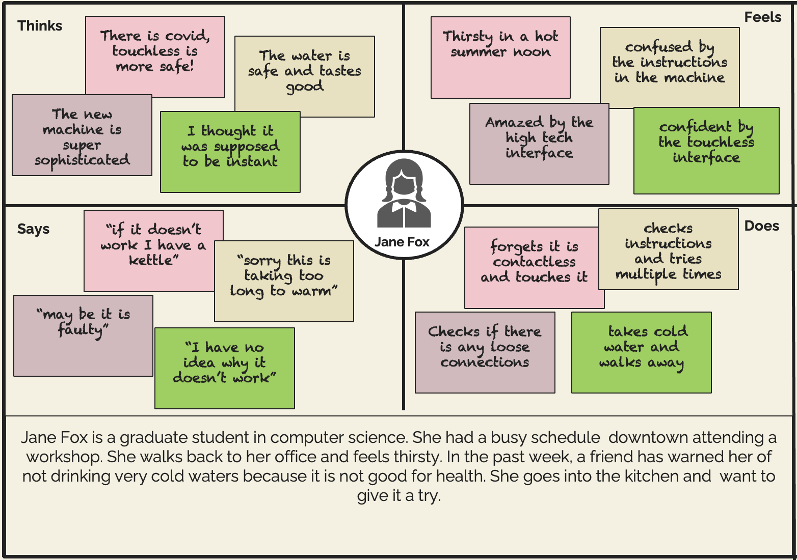
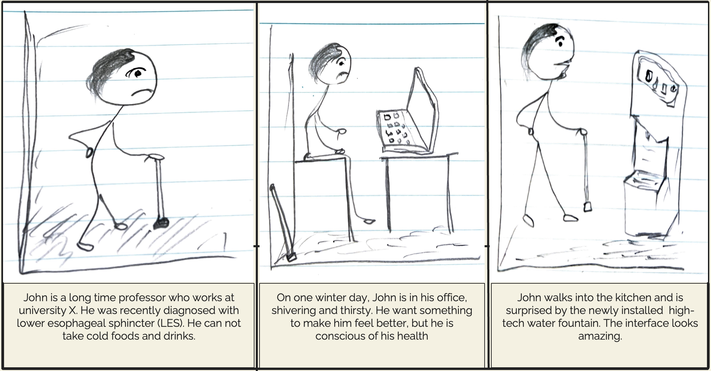
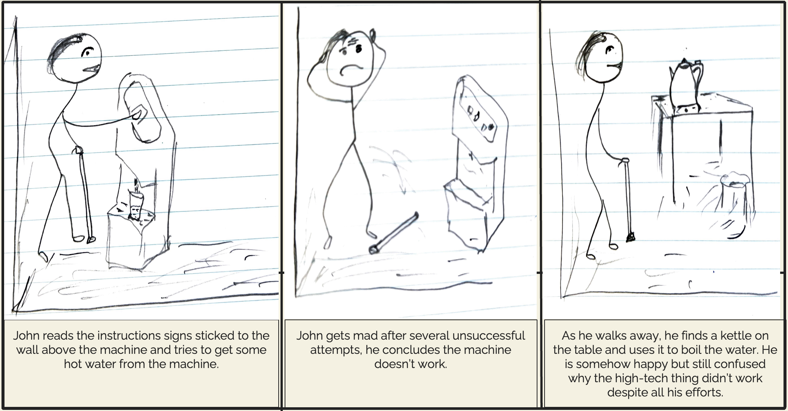

Project Overview
The goal of the project was to explore realistic personas of users and storyboarding user journeys as they interact with a chosen interface. We gathered user interaction insights by observing users as they naturally interacted with an interface of a water fountain in a public space kitchen. We were interested in learning how user interfaces might affect the user's experience and how we can improve them, … yes … improving user experience is our primary goal.
The Problem
The empathy maps below represent the personas of two users: John Doe and Jane Fox. Empathy maps are helpful tools for understanding user pain points and presenting in matrix form to explain what the users think, feel, say and do with the interface. They are used to personalize the design process on the developer side
 Design Approach
Insights from the empathy maps helped us create storyboards to illustrate the real journey of user interaction with an interface. The storyboard below follows the entire interaction journey of John Doe's persona as he interacts with the newly installed water fountain in the kitchen. We can learn from storyboard challenges users face and use design thinking to improve them.
 Lessons learned
The project was helpful to me in numerous ways. It opened my mind to how user interfaces can be improved by learning from real users. It changed my thinking that designers initially did interfaces only to something that involved understanding users' needs and pain points and getting into their shoes to solve their problems.